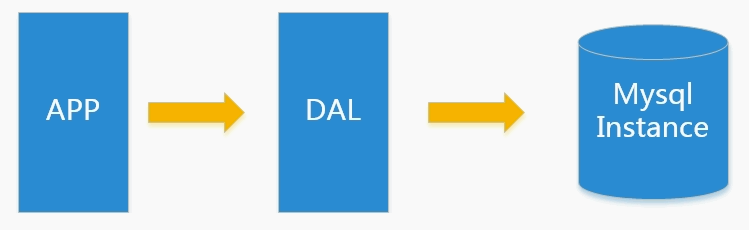
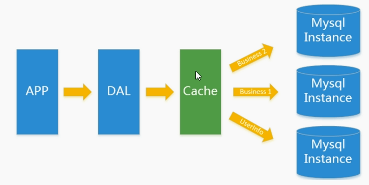
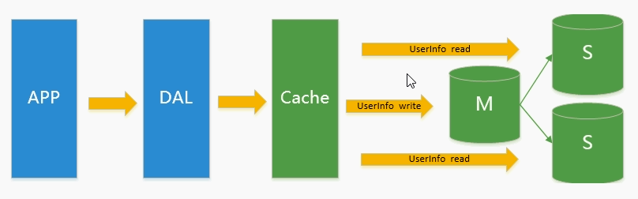
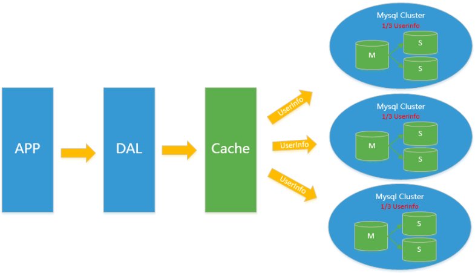
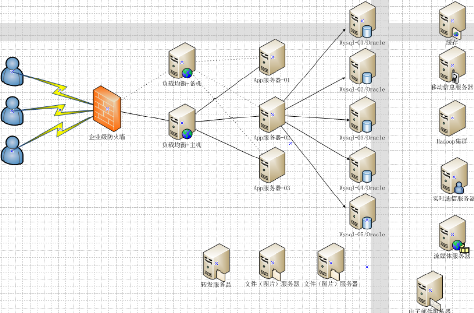

NOSQL 相关技术的入门概述
为什么是NoSQL
单机数据库的时代

- 数据库的总大小，一个机器放不下
- 数据的索引（B+树）一个机器的内存放不下
- 访问量（读写混合）一个实例不能承受
Memcached（缓存）+MYSQL+垂直拆分

访问量上升，使用缓存技术来缓解数据库的压力，优化数据库的结构和索引，同时数据库也进行分库处理，之前使用的是文件缓存，但是在访问量继续增大的时候，多台Web机器通过文件缓存不能共享，大量的小文件缓存也带来了比较高的IO压力，这个时候Memcached就自然的成为一个非常时尚的技术产品。
主从复制与读写分离

由于数据库的写入压力增加，Mencached只能缓解数据库的读取压力，读写集中在一个数据库让数据库不堪重负，大部分网站开始使用主从复制技术来达到读写分离，以提供读写性能和读库的可扩展性，mysql的master-slave模式成为了网站的标配。
分库分表+水平拆分+mysql集群

在Memcached的高速缓存，MySQL的主从复制，读写分离的基础之上，这时MySQL主库的写压力开始出现瓶颈，而数据量的持续猛增，由于MyISAM使用表锁，在高并发下会出现严重的锁问题，大量的高并发MySQL应用开始使用InnoDB引擎代替MyISAM。（InnoDB使用行锁）
同时，开始流行使用分表分库来缓解写压力和数据增长的扩展问题。这个时候，分表分库也就在这个时候，分库分表就是将变化不多的表与经常变化的表分开。
水平拆分简单的说就是9千万条数据通过某种手段分到多个库中。
MySQL推出了还不太稳定的表分区，这也给技术实力一般的公司带来了希望。虽然MySQL推出了MySQL Cluster集群，但性能也不能很好满足互联网的要求，只是在高可靠性上提供了非常大的保证。
Mysql扩展性瓶颈
MySQL数据库也经常存储一些大文本字段，导致数据库表非常的大，在做数据库恢复的时候就导致非常的慢，不容易快速恢复数据库。比如1000万4KB大小的文本就接近40GB的大小，如果能把这些数据从MySQL省去，MySQL将变得非常的小。关系数据库很强大，但是它并不能很好的应付所有的应用场景。MySQL的扩展性差（需要复杂的技术来实现），大数据下IO压力大，表结构更改困难，正是当前使用MySQL的开发人员面临的问题。
不在数据库中使用CLOB BLOB这样的大型数据存储
如今的形式

- 用户访问首先经过防火墙
- 之后通过Nginx反向代理（其中做了主备）
- 通过应用服务器，Tomcat集群
- 之后是数据库集群
- 其他的服务器
为什么使用NoSQL
什么是NoSQL
NoSQL(NoSQL = Not Only SQL )，意即“不仅仅是SQL”，泛指非关系形数据库
随着互联网web2.0网站的兴起，传统的关系数据库在应付web2.0网站，特别是超大规模和高并发的SNS（社交类网站-网状关系）类型的web2.0纯动态网站已经显得力不从心，暴露了很多难以克服的问题，而非关系型的数据库则由于其本身的特点得到了非常迅速的发展。NoSQL数据库的产生就是为了解决大规模数据集合多重数据种类带来的挑战，尤其是大数据应用难题，包括超大规模数据的存储。
这些类型的数据存储不需要固定的模式，无需多于操作就可以横向扩展
易扩展
NoSQL数据库种类繁多，但是一个共同的特点都是去掉关系数据库的关系型特性。
数据之间无关系，这样就非常容易扩展。也无形之间，在架构的层面上带来了可扩展的能力。
大数据量，高性能
NoSQL数据库都具有非常高的读写性能，尤其在大数据量下，同样表现优秀。
这得益于它的无关系性，数据库的结构简单。
一般MySQL使用Query Cache，每次表的更新Cache就失效，是一种大粒度的Cache，
在针对web2.0的交互频繁的应用，Cache性能不高。而NoSQL的Cache是记录级的，
是一种细粒度的Cache，所以NoSQL在这个层面上来说就要性能高很多了
多样灵活的数据模型
NoSQL无需事先为要存储的数据建立字段，随时可以存储自定义的数据格式。而在关系数据库里，
增删字段是一件非常麻烦的事情。如果是非常大数据量的表，增加字段简直就是一个噩梦
传统的RDBMS VS NOSQL
| RDBMS | NOSQL |
|---|---|
| 高度组织化结构化数据 | 没有声明性查询语言 |
| 结构化查询语言（SQL） | 没有预定义的模式 |
| 数据和关系都存储在单独的表中。 | 键 - 值对存储，列存储，文档存储，图形数据库 |
| 数据操纵语言，数据定义语言 | 最终一致性，而非ACID属性 |
| 严格的一致性 | CAP+BASE |
| 基础事务 | 高性能，高可用性可伸缩性 |
有什么类型
RedisMemcacheMongdb